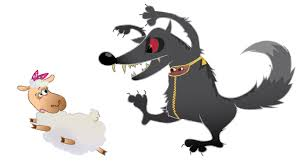

J'ai 12 ans, je m'appelle Paul, et j'ai fait ce site web tout seul, c'est pour çà que ce site n'est pas super bien, on ma juste aidé pour les fautes d'orthographes car je ne suis pas fort en francais, il n'est pas interdit de faire des dons SVP je vous donnerais plus d'information a la fin (tout en bas) du site web. Merci. Et n'hésitez surtout pas à faire des commentaire, sur Github, si çà peut vous faciliter la tâche. Et si vous en avez envie, vous pouvez aussi partager ce site avec des personnes que vous connaissez. Merci.
RAISON:
Tout dabord, j'ai choisi les loups car c'est mon animal préféré, je l'ai toujours adoré avec ses si beau yeux, sa musculature, sa fourrure pour moi si flamboyante et si belle, nan, vraiment, je l'adore.
En fait, c'est surtout car c'est mon animal préféré
L'histoire des chiens
Les loups sont des mamifères ancêtres des chiens qui ont toujours leurs instints animal sauvage et dangereux alors que les chiens, apprivoisés par les hommes ont perdus la majorité de leurs capacité sauvage et dangereux et cela va continuer si on continue d'apprivoisés les chiots dès la naissance les rendants calinoux, doux, gentils, adorables...
Le loup, sa personalité, ses capacités, sa taille en général, son poid en général...
Le loup, en général mesure de leur bout du museau a la fin de la queue pour les mâles 1.65m et pour les femèles 1.59m et pèse pour les mâles de 20kg à 70kg et 16kg à 70kg pour les femèles. Les loups sont forts (musclés), féroces, agiles, combatifs, en principal comparé à ce qu'on dit au enfants, ils ne mangent pas les humains, au contraire, ils en ont peur mais se défendent si on les agressent.
Pourquoi les chiens on-t-ils rencontrés les hommes qui les ont apprivoisés et les ont appelés "chien"
Tout a commencé quand les loups venaient dans les champs pour manger des chèvres, tout les habitants les craignaient et toute les légendes qu'on racontaient sur eux empirés les choses, on tué les loups, mais, des loups moins agressif s'aprochère des humains et se firent sympa, les humains, les voyants très sympathique, leurs donnèrent de la nourriture, puis les adoptèrent. Les loups miantenant en train de se "muter en chien" aidèrent les humains en gardants leurs troupeaux de moutons, de chèvres...
(petite paranthèse, je rabrège l'histoire car je ne connais pas tout et je ne suis pas un specialiste sur l'histoire des loups et des chiens) bref les humains s'en servirent comme gardiens de troupeaux. Puis le temps passa et d'autres habitants acceuillirent les chiens dans leurs maisons sans troupeaux à garder et devinrent calinous, gentils, fidèles... Bref, certains loups sont devenus des chien qui maintenant sont majoritairement apprivoisés dans nos maisons et donc, conclusion, nous sommes en majoritairement coupables de la gentillesse des chiens qui se trouvent dans nos maisons. Pour beaucoups de personnes qui trouvent mieux d'avoir un chien gentil à la maison, certe, mais comme il y a eu une forte baisse du nombre de" loups en France car ils étaient accusé tout le temps coupable des enlèvement de bêtes dans les troupeaux et u n tout peti peu de petits enfants. Mais après tout, si nous y pensons un peu plus et nous nous mettions à leurs places, on aurai fait un pareils pour survivre beaucoup plus facilement, car je peux vous assuré que capturé un mouton sans défense dans un champ est 1000 fois plus simple que d'aller chasse dans la forêt et des fois pendant de jours pour avoir un lapin, un renard ou avec de la chance une biche.

Oui, et bin quoi, j'ai le droit de défendre les loups, après tout, c'est mon animal préféré quoi, zut, on a jamais le droit de faire quelque chose ici.
La famille du loup
Le papa loup=loup
La maman loup=louve
Le bébé loup=louveteau et non loupieau ou loupio ou encore loupiau
Les mythes sur les loups
Le loup-garou
Pour la plupart de ce qui lisent cette page web, vous connaisser les loups-garous. Dans casiment tout les gros films, si il y a des/un loup-garou, il sont en général des méchants, et comme les loups-garous n'éxistent pas, je ne peux pas les défendres en disant le contraire car on peut dire ce qu'on veut sur les loups-garous vu que ca n'éxistent pas. on peut même dire que les loups-garous ressemblent à un cahier de maths, on aura pas tort, en tout cas de mon point de vue si on ne se fit pas au légendes. Un loup-garou est un homme qui se transforme en loup les nuits de pleines lunes, bien plus féroce, monstrueux, sans pitié, comparé à un loup normal. En tout cas, c'est ce que disent les légendes.
Exemple: Dans Harry Potter, dans l'épisode ou il y a un loup-garou, c'est un méchant ce qui est le cas dans l'extrême majorité des films ou il y a un loup-garou, voici un loup-garou. Le vrai nom de loup-garou est Lycanthrope